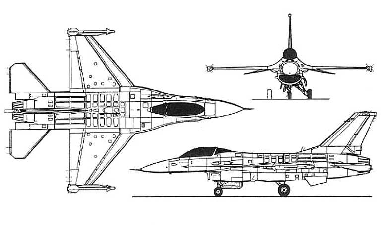
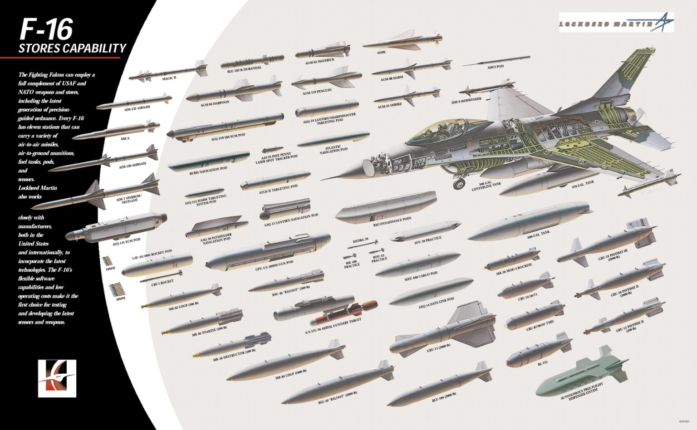

Легенди військової авіації
F-16 Fighting Falcon
F-16 Fighting Falcon (укр. «Фа́йтінг Фе́лкон») — одномоторний легкий багатоцільовий винищувач, розроблений компанією General Dynamics для Повітряних сил США. Розроблений як денний винищувач для отримання переваги у повітрі, він перетворився на всепогодний багатоцільовий літак. З моменту початку виробництва у 1976 році було побудовано понад 4 600 літаків. Попри те, що ПС США більше не закуповують цей літак, покращені версії виробляються для експортних клієнтів. У 1993 році General Dynamics продала свій авіабудівний бізнес компанії Lockheed Corporation (нині — Lockheed Martin). Додатково крім дійсної служби у ПС США, командуванні резерву ПС і підрозділах Повітряної Національної гвардії, літак також використовується демонстраційною групою ПС США Thunderbirds, а також як літак противника/агресора ВМС США. Завдяки своїй універсальності і відносно невисокій вартості F-16 має успіх на міжнародному ринку озброєнь, перебуваючи на озброєнні 25 країн. Станом на 2024 рік, F-16 є наймасовішим винищувачем четвертого покоління: експлуатується 2145 F-16.

Будова винищувача
Компонування F-16, як для винищувача 4-го покоління, доволі класичне. Інтегральне середньо-розташоване крило, з плавним переходом у фюзеляж дозволяє зменшити вагу літака, та збільшити внутрішній об’єм для додаткового пального та технічного обладнання, а також допомагає нарощувати підіймальну силу при маневруванні.
Саме підвищена маневрованість й була головною метою програми LWF, тому F-16 отримав круту механізацію крила. Автоматичні носки в передній кромці та класичні флаперони (елерони-закрилки) робили крило F-16 конструкторські навіть важчим за крило F-15, але це лише підвищило його спроможності. Винищувач також отримав один вертикальний стабілізатор, його кіль є над двигуном і має у своїй основі додатковий обтічник з обладнанням всередині.
Маса літака без додаткового навантаження складає 9,2 тис. кг, максимальна злітна вага — 19,2 тис. кг. Машина має в довжину близько 15 метрів, у висоту — 5 метрів, а розмах крил становить майже 9,5 метрів. Основний запас палива, достатній для польоту на понад 3700 км, розміщується в крилах та двох фюзеляжних паливних баках. Також у F-16 є можливість розмістити додатковий запас палива в підвісних баках чи здійснювати дозаправлення в польоті.
Кабіна F-16 — це монолітний купол, який у поєднані з ліхтарем краплеподібної форми забезпечує пілоту вільний огляд на 360 градусів. Вона оснащена системою кондиціонування, а також катапультовим кріслом фірми ACES II.
Головною як бойовою, так і експлуатаційною перевагою «Бойового сокола» є його силова установка. Спочатку F-16 був оснащений одним, трохи модифікованим, турбодвигуном від F-15 — Pratt & Whitney F100-PW-200. Це доволі потужний двигун з тягою в 11 340 кг/с. За середньої злітної ваги F-16 у 10 тонн двигун забезпечує показник тягооснащеності близько 1,13 і дозволяє машині розвинути швидкість до 2,0 Мах (2450 км/год.).
«Бойовий сокіл» озброєний до зубів
У F-16 відсутні проблеми з бойовим арсеналом, він може нести 7,7 тонни різного озброєння на 11 підвісах (дві протиповітряні ракети на кінцівках крила, шість пілонів під напівкрилами та три під фюзеляжем). Він уніфікований для використання всіх підвісних видів озброєнь виробництва країн НАТО. Крім цього, «Бойовий сокіл» озброєний вбудованою 20-мм авіаційною гарматою М61-А-1 Vulcan з боєкомплектом у 511 снарядів.
Неповний список озброєння F-16:
1. Ракети повітря-повітря — AIM-7 Sparrow/Skyflash, AIM-9 Sidewinder, AIM-120 AMRAAM, AIM-132 ASRAAM, Magic II, MICA, Python 3
2. Ракети повітря-поверхня — AGM-45 Shrike, AGM-65 Maverick, AGM-84 Harpoon, AGM-88 HARM, AGM-119 Penguin, Wasp, AS.30L
3. Бомби — B43, GBU-10/12/24 Paveway з лазерним наведенням, GBU-15, Mk 82/83/84 GP, BLU-109, Mk 20 Rockeye, BLU-107 Durandal, CBU-52/58/71/87/ 89/97 кластер, BL-755, Mk 36 Destructor